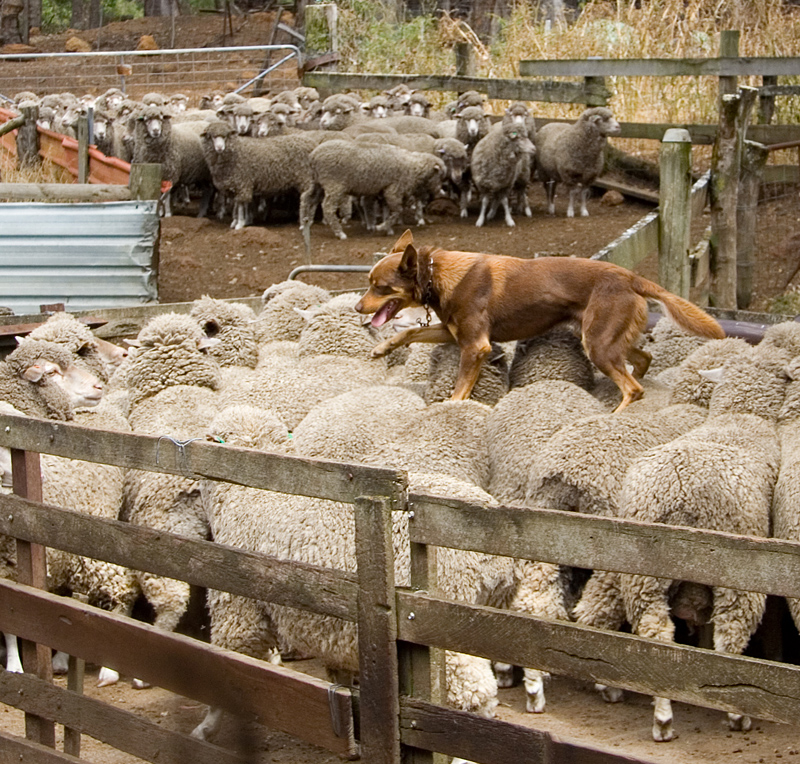
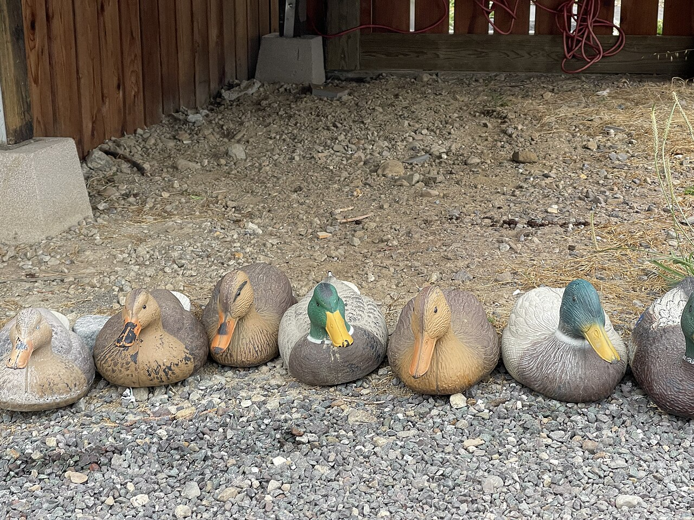

Inheritance, Interfaces and Polymorphism
Describe a shared contract, implement it in several classes, and trace which method runs. Compare Java inheritance and interfaces with Python inheritance, abstract base classes and duck typing.
The lecture, then the practice
Choose a section, or use the arrow keys in the section list. Hover or tap an underlined part of a program for its explanation. Run it, then use Edit to test a prediction of your own.
01Inheritance and construction

class Kelpie extends Dog should mean: a vet who can treat any dog can treat a kelpie, so a Kelpie can go wherever a Dog is expected. Where it breaks: if you would ever have to say “it is a Dog, except it cannot bark”, the subclass is breaking a promise, and inheritance is the wrong tool. Photo: Martin Pot (martybugs), 2007 · CC BY 3.01.1An is-a relationship
Inheritance makes a new class a more specific kind of an existing one. A Dog is an Animal, so a Dog gets Animal’s fields and methods and can add its own. Animal is the superclass (parent, base class). Dog is the subclass (child).
The test: can a Dog go everywhere an Animal is expected, and keep every Animal promise? If you catch yourself saying “it is an Animal, except…”, do not inherit. To reuse code, use the tool in section 4.
| Idea | Java | Python |
|---|---|---|
| declare a subclass | class Dog extends Animal { … } | class Dog(Animal): |
| direct superclasses allowed | exactly one | one or more |
| if you name none | the class extends Object | the class inherits from object |
| run the parent’s constructor | super(name); as the first statement | super().__init__(name), anywhere in __init__ |
| are constructors inherited? | no: each class writes its own | yes: __init__ is inherited if the subclass has none |
| private parts of the parent | a private field exists in every Dog, but only Animal’s code can use it | not enforced; _name means “internal, do not touch” |
protected is wider than it looksJava’s protected also opens a member to every class in the same package. On Ed that is all your classes. Keep fields private and give subclasses methods.
1.2Build the base part first
A Dog contains an Animal part, and the parent’s constructor builds it first. In Java, super(name) must be the constructor’s first statement. If you leave it out, Java inserts super(), with no arguments.
If Animal only has Animal(String name), then Dog() { } fails: the hidden super() has nothing to call. javac on Ed says constructor Animal in class Animal cannot be applied to given types; and this page says Implicit super constructor Animal() is undefined. Fix: call super(name) yourself.
In Python, a Dog with no __init__ inherits Animal’s. Once Dog defines its own, Animal’s runs only if you call super().__init__(name). Forget it and nothing complains, but the Dog has no name. See Forget super().__init__() and the name never arrives below.
super(name), which builds the Animal part, and only then does it add its own breed. Java enforces the order: a super(…) call must come first in a constructor, and if you leave it out Java quietly calls super() for you. Where it breaks: a house is built once, but every new Dog(…) builds a whole new object, base part and all. Photo: L Maule, 2019 · CC BY-SA 4.01.3Override to replace, super to extend
To override a method, define one with the same name and parameters in the subclass. Calls on a Dog then run Dog’s version, even through an Animal variable.
To extend the parent’s answer instead of replacing it, call super.speak() (Java) or super().speak() (Python) inside the override.
Without @Override, a typo like speek() silently creates a new method, and Animal’s speak() still runs. With it, the compiler reports the mistake (see Without @Override, a typo survives). Python has no built-in check. typing.override (Python 3.12) is read only by checkers such as mypy.
new Dog(…): watch the object being built, base part first
Press Next to run one line at a time, in Java and Python together. The top frame of the call stack is the constructor now running. The object is drawn in layers: the inherited Animal part at the bottom, the Dog part on top.
This interactive diagram needs JavaScript.
Which speak() runs? Predict, then watch the lookup walk up the tree
Every variable is declared as Animal. Pick an object and a method, predict whose version runs, then press Next. At run time, Java and Python start at the object's own class and walk up until they find the method. Arrows point from subclass to superclass. The outputs come from running the two programs below.
This interactive diagram needs JavaScript.
super().speak(): extend the parent's answer instead of replacing it
This is the example Calling the parent in Python below, with Java beside it. Watch the call stack grow by one frame for the super call.
This interactive diagram needs JavaScript.
- Initialise the Animal part of the Dog with its name.
- The actual object is a Dog, so its override runs.
- Dog derives from Animal and uses its constructor here.
- Call the next class’s version in the method resolution order, then extend the result.
- A typo:
speek, notspeak. This is a brand-new method, not an override, and nothing calls it. - Dog has no
speak()of its own, so Animal’s runs and printsMilo is quiet. Press ✎ Edit and add@OverridebeforeString speek(): now the compiler catches the typo. - The Animal part is built first, with the name.
- Dog’s own
__init__replaces Animal’s and never calls it. Soself.name = namenever runs for a Dog. - Cat does it properly: build the Animal part first, then add its own attribute.
False: the Dog has no name. Nothing has failed yet, butprint(milo.name)would stop with anAttributeError.varsshows an object’s attributes as a dictionary: onlybreedis there.
Every Java class has a superclass, even when you do not write extends. The Java documentation puts it plainly: “Class Object is the root of the class hierarchy. Every class has Object as a superclass.” That is why System.out.println(pet) works for any object: toString() is inherited all the way from Object. Python 3 does the same: every class inherits from object, which is why it appears at the end of every __mro__. Java SE 8 API: class Object Python docs: class object
Add a Cat with a different speak implementation. Put a Dog and a Cat behind the same general type and predict each method call.
02Dispatch and abstract classes
2.1Declared type versus object type
A Java variable has a declared type: Animal pet. The object it refers to has an object type: new Dog("Milo"). Each call raises two questions:
- May I call it? The compiler checks the declared type only.
pet.fetch()fails, because not every Animal hasfetch(). - Which version runs? For an overridden instance method, the object decides at run time. This is dynamic dispatch. It gives you polymorphism (“many forms”): one line,
pet.speak(), behaves differently for each object.
Everything else is fixed by the compiler:
| What is being chosen | Decided by | When |
|---|---|---|
| which overridden instance method runs | the object | run time |
which field value.label reads | the declared type | compile time |
which static method runs | the declared type | compile time |
which overload: f(int) or f(double) | the declared types of the arguments | compile time |
a private method | not inherited, so never overridden | — |
Python has no declared types. Every call looks the method up on the object’s class at run time. There is no overloading: a second def with the same name replaces the first.
((Dog) pet).fetch() compiles, but throws ClassCastException at run time if pet holds a Cat. Check with pet instanceof Dog (Python: isinstance(pet, Dog)) first, or move the method into the superclass.
value.label is chosen from the declared type alone. Photo: Santeri Viinamäki, 2016 · CC BY-SA 4.02.2Incomplete does not mean useless
An abstract class is a category, not a thing: nobody owns a plain “shape”. It can have fields, constructors and normal methods. It can also have abstract methods, which have no body. Each concrete subclass must supply them.
abstract class Shape {
private final String name;
Shape(String name) { this.name = name; }
abstract double area(); // no body: each shape decides
String describe() { return name + " with area " + area(); }
}describe() is finished code that calls the unfinished area(). On a Square, that call runs Square’s area(). This is the template method pattern.
Java refuses new Shape(…) at compile time. A subclass that skips an abstract method must be abstract too. In Python, a subclass of ABC with an unimplemented @abstractmethod raises TypeError when you try to create one. Try it in The abstract-method check below.
raise NotImplementedError is a weaker promiseA method body of raise NotImplementedError still lets the object be created. The error waits until someone calls the method, maybe months later. Use ABC and @abstractmethod to fail at creation.
new Shape() is refused. Where it breaks: a chassis is unfinished in a physical way; an abstract class is unfinished only in the methods it marks abstract. Photo: Brian Snelson, 2008 · CC BY 2.0One object, two labels: the declared type picks the field, the object picks the method
This is the example Fields and methods are resolved differently below. Step through, then switch the declaration to Child value and step again. Watch which label is read and which describe() runs.
This interactive diagram needs JavaScript.
Overloading or overriding? Predict both choices for each call
Each call makes two choices. Which treat? That is overloading: the compiler picks it from the declared types of the arguments. Which sound()? That is overriding: the object decides at run time. Answer both, then check.
This interactive diagram needs JavaScript.
Ask the compiler: can you make one?
Shape is an abstract class. It shares finished code (describe()) and leaves one method (area()) to subclasses. Choose how Square is written, then try a line. This only asks the compiler. The messages are what javac prints on Ed.
This interactive diagram needs JavaScript.
The abstract-method check: Python decides when you try to make the object
This is the example A Python abstract base class below, plus a class Lazy that forgets area. Press a button to try to make an object, then step. Python checks for abstract methods that nothing has implemented.
This interactive diagram needs JavaScript.
- Field access uses the declared type Parent.
- An overridden instance method is dispatched on the Child object.
- A concrete subclass must provide this method before it can be instantiated.
- A Square is also an instance of its base type.
- The declared type. The compiler only lets you call methods that every Animal has.
- Allowed, because Animal has
speak(). At run time the Dog’s override is the one that runs. - Rejected at compile time, though the object really is a Dog. An Animal variable promises nothing about
fetch(), and the compiler never looks at the object. - Only Dog has this method. To call it you would need a variable of type
Dog.
Press Run and this browser's Eclipse compiler reports: The method fetch() is undefined for the type Animal. On Ed, javac says: Demo.java:5: error: cannot find symbol. Fix it: press ✎ Edit, delete line 5 and run again. It prints Milo says woof.
Replace Square(3) with Shape() in Python and explain the failure. In Java, rename the child field and predict whether method dispatch changes.
03Interfaces and behavioural contracts
interface Shape { int area(); } fixes the operation and leaves the storage (sides, widths, radii) to each class. Code written against Shape, like the crane, works with classes that did not exist when it was written. Where it breaks: a container standard fixes the outside; an interface also promises what area() means, and only the programmer can keep that promise. Photo: Raimond Spekking, 2004 · CC BY-SA 4.03.1Specify an operation without choosing storage
An interface is a type made only of promises. interface Shape { int area(); } fixes the operation, not the storage. A class writes implements Shape and must provide a public int area(). You can use Shape as a variable, parameter or array type, but never new Shape().
A class extends one class but can implement many interfaces: class Duck extends Bird implements Swimmer, Flyer.
A Java 8 interface can also hold constants, static methods and default methods (methods with a body). The Java tutorial says defaults “enable you to add new functionality to the interfaces of your libraries and ensure binary compatibility with code written for older versions of those interfaces.” (source). That is how Iterable gained forEach.
publicInterface methods are public. Leaving public off int area() in Square is an error. javac says area() in Square cannot implement area() in Shape. This page says Cannot reduce the visibility of the inherited method from Shape.
Abstract class or interface? Neither can be created directly. Choose like this:
| Question | Abstract class | Interface |
|---|---|---|
| how many can one class have? | one | any number |
| instance fields? | yes | no (constants only) |
| constructors? | yes | no |
| method bodies? | yes | only default and static methods |
| choose it when… | the subclasses are kinds of one thing and share state and code | unrelated classes share an ability (Comparable, Runnable, Shape) |
3.2A common caller needs only the promise
Python needs no declaration at all. notify(channel) calls channel.send(…), so any object with a suitable send works. This is duck typing: what counts is what an object can do, not its class.
“If it looks like a duck and quacks like a duck, it must be a duck.”
The Python glossary, quoting the proverb in its definition of duck-typingBuilt-ins work the same way. sorted(), min() and max() need only <, which a class gets by defining __lt__ (see Teach sorted() to compare students). Java does this with the Comparable interface.
Java refuses to compile a call to a missing send. Python fails only when the line runs: AttributeError: 'Printer' object has no attribute 'send'. typing.Protocol (Python 3.8) lets checkers such as mypy catch it before running.

notify(channel) never asks what class channel is; it only needs channel.send(text) to work. Anything with a suitable send will do, including classes nobody planned for. Where it breaks: a decoy passes the “looks like a duck” test but fails the moment you ask it to fly, and Python finds a missing method only when that line runs. Photo: Missvain, 2021 · CC BY 4.03.3Program to an interface
Type parameters and variables by the interface, not one class. Last week’s total(List<Integer> xs) works for every kind of list, even future ones. With List<String> names = new ArrayList<>();, switching to a LinkedList changes one word.
“Program to an interface, not an implementation.”
Erich Gamma, Richard Helm, Ralph Johnson & John Vlissides (the “Gang of Four”), Design Patterns, 1994, p. 183.4The compiler checks the shape, not the meaning
An interface fixes names and types, not meaning. It cannot say which unit area() uses, or whether it may be negative. Those behavioural promises live in documentation, and only programmers keep them.
Object’s documentation promises: “If two objects are equal according to the equals(Object) method, then calling the hashCode method on each of the two objects must produce the same integer result.” (source). Override equals in Point but not hashCode, and it still compiles. But a HashSet holding Point(1, 2) then answers false to contains(new Point(1, 2)), because the two equal points have different hash codes.
So treat an interface method’s comment as part of the interface. Breaking it is a bug, even if the code compiles. (Week 11 calls this the Liskov substitution principle.)
One promise, many shapes: step the loop through the interface
This is the example An interface is a useful promise below. The socket is the interface: it fixes the operation, not the storage. Step the loop and watch each object plug in. Then choose + Triangle: a new class, same loop. Click a card to jump to it.
This interactive diagram needs JavaScript.
Does it fit the socket? Java checks the promise
Choose how Label is written, then try a line. A Java class fits an interface only if it says implements and keeps every promise, with the right access. This only asks the compiler. The messages are what javac prints on Ed.
This interactive diagram needs JavaScript.
Duck typing: if it has send(text), it is a channel
This is the example Duck typing uses a behavioural contract below. There is no interface and no base class: the “socket” is just what notify does with its argument. Then choose + Robot and Brick: one object nobody planned for, and one that cannot keep the contract.
This interactive diagram needs JavaScript.

- Specify the public operation shared by otherwise different classes.
- Call the same contract on different implementations.
- The function needs send(text), not a particular parent class.
- A different object can satisfy the same behavioural expectation.
- Defines
a < bfor two Students: compare marks. Student inherits nothing special. It just has the method. - How a Student looks when printed inside a list.
sortednever asks what class the items are. It only uses<, which our__lt__supplies: duck typing.maxandminuse the same comparison, so they work too, for free.
Python's own built-ins use duck typing. len(x) does not check whether x is a list or a string: the language reference says the special method __len__ is “called to implement the built-in function len()”. Give your own class a __len__ method and len() works on it too. Like a tape measure, len will measure anything that has a length. Python language reference: object.__len__
Add another implementation while leaving the loop or notify function unchanged. Explain what must be preserved for existing callers to keep working.
04Composition, final and multiple inheritance
4.1Use inheritance for substitutable types
Inheritance means is-a. Composition means has-a: a Notice keeps a Channel in a field and hands it the delivery. Handing work to a part like this is called delegation. Swap in another Channel (screen, email, test fake) and Notice does not change.
“Favor object composition over class inheritance.”
Erich Gamma, Richard Helm, Ralph Johnson & John Vlissides (the “Gang of Four”), Design Patterns, 1994, p. 20In A counting set that counts twice (from Joshua Bloch’s Effective Java, 3rd edition, Item 18; the book’s code), a HashSet subclass counts added items. Adding three words reports six, because the inherited addAll calls the overridden add. Holding a HashSet in a field avoids this.
| Pair | Relationship | Tool |
|---|---|---|
| Kelpie and Dog | is-a | class Kelpie extends Dog |
| Square and Shape | is-a (an ability) | class Square implements Shape |
| Car and Engine | has-a | a field: private final Engine engine; |
| Notice and Channel | has-a, replaceable | a field typed by the interface: private final Channel channel; |
| Stack and Vector | should be has-a | Java’s library used extends; see Did you know? below |
“If C++ and Java are about type hierarchies and the taxonomy of types, Go is about composition.”
Rob Pike, co-designer of Go, Less is exponentially more, 25 June 2012 Portrait: Kevin Shockey, 2010 · CC BY 2.0Notice has a Channel, kept in a field and typed by the interface, so the delivery method can be swapped (a screen, an email, a test recorder) without changing Notice. Inheritance would be like welding one lens onto the body for good. Where it breaks: a lens is swapped by hand; a final field is chosen once, in the constructor. Photo: Hallo3800, 2025 · CC04.2Trace the actual lookup order
Python allows several parents: class C(A, B). The method resolution order (MRO), stored in C.__mro__, sets where to look: C, A, B, object. So if A and B both define label(), A wins.
In a diamond, B and C both extend A, and class D(B, C) extends both. The MRO is D, B, C, A, object: A appears once, after B and C. super() follows this list, so super() in B can reach C.
A Java class has one parent. But if two interfaces give the same default method, the class must override it. It can call one version with English.super.greet(). Otherwise javac says class Robot inherits unrelated defaults for greet() from types English and Vietnamese.
Run print(D.__mro__) and trust it. If you need to do that often, simplify the design.
super() in Python works the same way: it calls the next class in the MRO, and the MRO is fixed by the object's class, not by the class whose code is running. In the diamond diagram, A's super() reaches B, a class A has never heard of, because that is the next domino in C's line. Where it breaks: a domino always falls, but a method that does not call super() stops the chain. Photo: Kurt:S, 2015 · CC BY 2.04.3final: no more changes
Java’s final stops change:
final on | Means | Example |
|---|---|---|
| a class | no class may extend it | Java’s own String is a final class |
| a method | no subclass may override it | final String id() { … } |
| a variable or field | it cannot be reassigned once it has a value | private final Channel channel; |
Make a class final if it was not designed to be extended. Bloch’s rule: design and document for inheritance, or else prohibit it.
final fixes the reference, not the objectfinal List<String> names = new ArrayList<>(); allows names.add("An"); but refuses names = new ArrayList<>();. The list can change. The variable cannot be reassigned.
Python has no enforced final. typing.final (Python 3.8) is read only by checkers. By convention, constants are written in UPPER_CASE.
Has-a, not is-a: Notice delegates delivery to its channel
This is the example Compose a behaviour instead of inheriting it below, with Python beside it. Step through, then choose A test recorder: the same Notice, plugged into a channel that records messages instead of showing them.
This interactive diagram needs JavaScript.
Ask the compiler: what does final forbid?
Choose how Animal is declared, then try to write a Dog subclass. This only asks the compiler; the messages are what javac prints on Ed.
This interactive diagram needs JavaScript.
A final variable: fixed reference, changeable object
Choose a declaration, then try a line. final on a variable fixes which object it refers to. It does not freeze the object. This only asks the compiler.
This interactive diagram needs JavaScript.
Where does Python look? Walk the method resolution order
The first hierarchy is the example Method resolution in multiple inheritance below. Step through it, then try the others: swapped base classes, A without label, and a diamond where every class calls super(). Each strip shows the real C.__mro__ its program printed.
This interactive diagram needs JavaScript.
- Keep a collaborator through its interface.
- Delegate message delivery rather than subclassing a concrete delivery class.
- In this simple hierarchy, A comes before B in the method resolution order.
- Print the real order Python uses instead of guessing from a diagram.
- Inheritance used for reuse: CountingSet wants HashSet’s storage, plus a counter.
- Counts all three words at once, then hands the job to the parent.
- The inherited
addAllcallsaddfor each word, andaddis overridden. So each word is counted again: 6, not 3. - One call, three words, and the answer depends on how the parent happens to be written. Holding a HashSet in a field would count 3.
- A default method: an interface method with a body, allowed since Java 8.
- Two interfaces, both with a default
greet(). Without the override below, this line does not compile. - Calls English’s version explicitly. The class decides; Java never guesses.
Java's own Stack class is a textbook case of inheritance used where composition fits better. Its documentation says it “extends class Vector with five operations”, and because a Stack is a Vector it also inherits methods such as add(index, element) and remove(index), so you can pull an element out of the middle of a “stack”, Jenga-style. The same page now recommends the Deque interface instead: “A more complete and consistent set of LIFO stack operations is provided by the Deque interface and its implementations, which should be used in preference to this class.” Java SE 8 API: class Stack
Reverse the Python base-class order in C. Then sketch how you would give Notice a test delivery channel that records messages rather than displaying them.
05Coding exercises
These are new practice tasks for this website. Read the input and output contract, complete the starter, then run the tests. They are not assessment submissions.
06Team activity
Review an is-a claim
Consider making Square extend a mutable Rectangle with setWidth and setHeight. Write a caller that expects changing width to preserve height. Discuss the promise a Square would break, then propose an area-only interface instead.
Draw dispatch in two colours
For Parent value = new Child(), mark declared types in one colour and actual objects in another. Explain the two output lines in the field/method example. Invent a method call rejected at compile time even though Child has that method.
Is-a or has-a? Sort the pairs
In pairs, decide for each pair whether the first should extend the second, implement it as an interface, or hold it in a field: Car and Engine; Manager and Employee; Penguin and Bird (where Bird has fly()); Playlist and ArrayList<Song>; Square and Shape; Notice and Email. For every “extends”, name one promise of the parent the child must keep. For every “hold”, say what you could swap in later. Compare with another pair: the disagreements are the interesting part.
07Quiz
Predict the behaviour before running a program. Answer every question, then grade to see explanations. Nothing here is recorded or submitted.
08Further reading
The Ed lessons below provide the course material behind this page. The worked examples, activities and practice questions here are newly written adaptations.
Inheritance in Java
Read the lesson and trace its examples on Ed.
edstem.orgCourse source / referenceInheritance in Python
Read the lesson and trace its examples on Ed.
edstem.orgCourse source / referenceInterfaces
Read the lesson and trace its examples on Ed.
edstem.orgCourse source / referenceThe List Interface
Read the lesson and trace its examples on Ed.
edstem.orgCourse source / referencePython inheritance
Subclassing, overriding, and multiple inheritance.
docs.python.orgCourse source / referenceAbstract base classes
ABC and abstractmethod.
docs.python.orgCourse source / referenceJava interfaces
Declaring and implementing interfaces.
docs.oracle.comPhotographs
From Wikimedia Commons, reused under the licence each one names. Author and licence come from the Commons API rather than from anyone’s memory — see media/fetch-photo.py.
| Image | Source |
|---|---|
| w8-kelpie | Kelpie walking across the backs of sheep — Martin Pot (martybugs), 2007 · CC BY 3.0 |
| w8-house-frame | Timber frame house under construction, New Zealand — L Maule, 2019 · CC BY-SA 4.0 |
| w8-fig-roots | Moreton Bay Fig Tree roots-1+ (2310111091) — Sheba_Also 43,000 photos, 2008 · CC BY-SA 2.0 |
| w8-tv-remote | TV remote control in hand — Santeri Viinamäki, 2016 · CC BY-SA 4.0 |
| w8-rolling-chassis | Rolling chassis — Brian Snelson, 2008 · CC BY 2.0 |
| w8-container-terminal | Hamburg Hafen Containerterminal — Raimond Spekking, 2004 · CC BY-SA 4.0 |
| w8-duck-decoys | Duck decoys - 2021-08-24 - Sarah Stierch — Missvain, 2021 · CC BY 4.0 |
| w8-tape-measure | Blue tape measure — Clément Bucco-Lechat, 2013 · CC BY-SA 3.0 |
| w8-camera-lens | Adapted Lens on Mirrorless Camera — Hallo3800, 2025 · CC0 |
| w8-dominoes | Dominoes falling — Kurt:S, 2015 · CC BY 2.0 |
| w8-jenga | Jenga distorted — Guma89, 2012 · CC BY-SA 3.0 |


Comics
| Comic | Source |
|---|---|
| xkcd 927 | Standards (2011) — Randall Munroe, CC BY-NC 2.5 |
M1Java and Python, side by side
Reference, not reading: this week in both languages, with a note where one has no equivalent.
Inheriting
| Idea | Java | Python |
|---|---|---|
| declare a subclass | class Dog extends Animal | class Dog(Animal): |
| build the parent part | super(name); — first statement | super().__init__(name) |
| call the parent’s version | super.speak() | super().speak() |
| check that it overrides | @Override, checked by the compiler | nothing built in; @typing.override (3.12) for checkers |
| root of every class | Object | object |
| several parents | one class, any number of interfaces | any number of classes, ordered by the MRO |
Abstract types and interfaces
| Idea | Java | Python |
|---|---|---|
| abstract class | abstract class Shape | class Shape(ABC): |
| abstract method | abstract double area(); | @abstractmethod above def area(self): |
| creating one anyway | compile error | TypeError when the object is created |
| interface | interface Shape { int area(); } | no keyword: an ABC, a Protocol, or just duck typing |
| method with a body in an interface | default method (Java 8) | any method in an ABC |
| sortable objects | implements Comparable<T> | define __lt__ |
Types and dispatch
| Idea | Java | Python |
|---|---|---|
| is it one of these? | pet instanceof Dog | isinstance(pet, Dog) |
| treat it as a Dog | cast: (Dog) pet | no cast needed; just call the method |
| which method runs | the object’s class (overridden instance methods) | the object’s class, then the MRO |
| fields and static methods | chosen by the declared type | looked up on the object at run time |
| overloading | yes, chosen at compile time | no: a second def replaces the first |
| inspect the lookup order | — | C.__mro__ or C.mro() |
Stopping change
| Idea | Java | Python |
|---|---|---|
| no subclasses | final class Money | not enforced; @typing.final for checkers |
| no overriding | final void id() | not enforced; @typing.final for checkers |
| no reassignment | final int MAX = 10; | convention: MAX = 10 in upper case |
M2Two answers to the diamond
M2.1The diamond problem
If B and C both extend A, and D extends both, you get a diamond. Which hello() does a D use? Does it hold one A part or two? Languages answer differently.
| Language | Its answer |
|---|---|
| C++ | Several base classes. The shared base appears once per path, or once in total if declared a virtual base class. Ambiguous calls are compile errors. |
| Java | One superclass, so no class diamonds. Since Java 8, if two interfaces supply the same default method, the class must override it (the Two default methods example). |
| Python | Several base classes, all put in one line, the MRO. For class D(B, C) the line is D, B, C, A, object: A appears once, after everything that inherits from it. |
M2.2Where Python’s order comes from
Python computes the MRO with C3 linearisation (since Python 2.3). It was borrowed:
“The C3 method itself has nothing to do with Python, since it was invented by people working on Dylan and it is described in a paper intended for lispers.”
Michele Simionato, The Python 2.3 Method Resolution Order, in the Python HOWTOsThe paper is A Monotonic Superclass Linearization for Dylan. Dylan is a Lisp-family language. C3 keeps every class before its parents, and keeps the order you list the parents in. If no order does both, Python raises TypeError.
Use Where does Python look? in section 4, or run print(D.mro()) in the Playground. Then swap (B, C) to (C, B) and predict the new order.
M3Inheritance regrets in the JDK
Java’s own library has inheritance its documentation now regrets. Three cases, in the library’s own words.
M3.1Stack is a Vector
See section 4’s Did you know?. Every stack inherits Vector’s methods for editing the middle, which a stack should never allow. The docs recommend Deque.
M3.2Properties is a Hashtable
java.util.Properties holds text settings, but it extends Hashtable, which accepts any objects:
“Because Properties inherits from Hashtable, the put and putAll methods can be applied to a Properties object. Their use is strongly discouraged as they allow the caller to insert entries whose keys or values are not Strings. The setProperty method should be used instead.” Source: class Properties.
The inherited methods break the subclass’s rule.
M3.3Timestamp is a Date, but do not treat it as one
java.sql.Timestamp extends java.util.Date and adds nanoseconds, so its equals differs from Date’s:
“it is recommended that code not view Timestamp values generically as an instance of java.util.Date. The inheritance relationship between Timestamp and java.util.Date really denotes implementation inheritance, and not type inheritance.” Source: class Timestamp.
Implementation inheritance reuses code. Type inheritance promises substitution. extends gives you both. For reuse only, hold the object in a field.
Read, practise, explain
Read Java and Python inheritance, then Interfaces and the List-interface demonstration. Practise tracing construction, field access and overridden instance methods separately.
These pages follow the topic sequence in Canvas Subject Schedule and the Ed lessons. Some topics were introduced earlier on this website, so Week 6 consolidates Week 5 before collections. Use current announcements and Canvas assignments for deadlines. Practice here is independent of graded labs, code comprehension, assignments and exams.